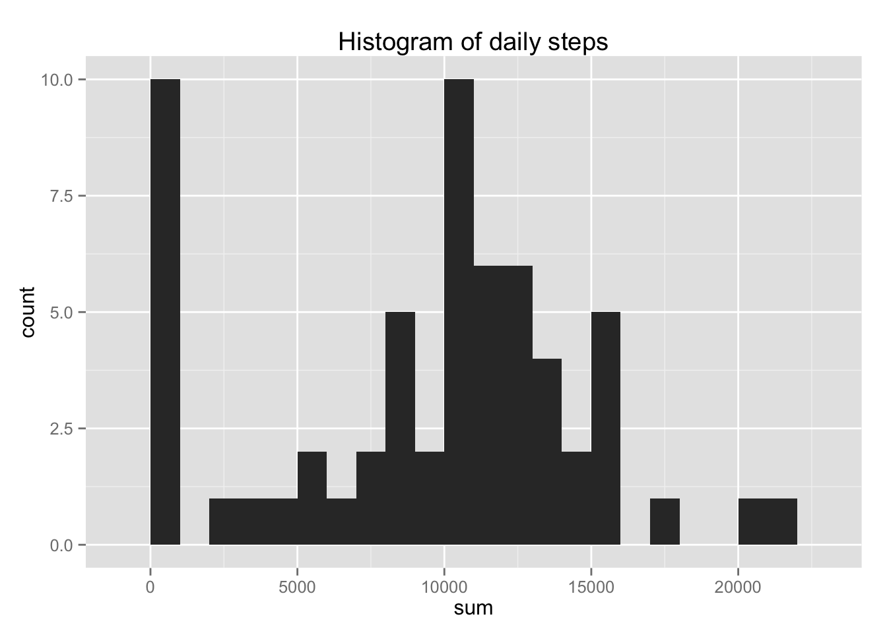
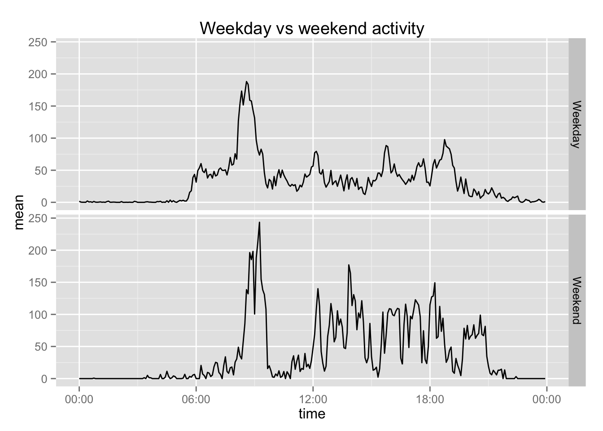

Reproducible Research: Peer Assessment 1
by Jerzy Baranowski
Loading and preprocessing the data
data <- read.csv(unz("activity.zip", "activity.csv"))
data$interval<-as.character(data$interval)
for (i in 1:nrow(data))
{
if(nchar(data$interval[i])<2)
{data$interval[i]<-paste("000",data$interval[i],sep="")}
else if (nchar(data$interval[i])<3)
{data$interval[i]<-paste("00",data$interval[i],sep="")}
else if (nchar(data$interval[i])<4)
{data$interval[i]<-paste("0",data$interval[i],sep="")}
}
data$time<-paste(data$interval,data$date)
data$time<-strptime(data$time,"%H%M %F")
data$interval<-as.factor(data$interval)
data$date<-as.factor(data$date)What is mean total number of steps taken per day?
library(plyr) #this package provides function ddply
# create summaries mean, median, sum for daily data with NA removed
daily<-ddply(data,.(date),# ddply creates a data frame from data splited by variable date
summarise, # uses function summarise
#mean=mean(steps,na.rm=TRUE),
#median=median(steps,na.rm=TRUE),
sum=sum(steps,na.rm=TRUE)
)
mean_steps<-mean(daily$sum)
median_steps<-median(daily$sum)
daily$mean<-mean(daily$sum)
daily$median<-median(daily$sum)Using data from dataframe daily it is easy to compute:
- mean number of daily steps 9354.2295
- median of daily steps 10395
library(ggplot2)
ggplot(daily)+
geom_histogram(aes(sum),binwidth=1000)+
labs(title="Histogram of daily steps")
What is the average daily activity pattern?
To compute daily activity pattern the following steps had to be taken
- Create a new data frame
- Convert the factor into hourly time
- Convert hourly time int chron
- Set GMT timezone (otherwise time ticks are shifted)
- Create a plot
# create summaries mean, median, sum for interval data with NA removed
perminute<-ddply(data,.(interval),# ddply creates a data frame from data splited by variable date
summarise, # uses function summarise
median=median(steps,na.rm=TRUE), #will be used later
mean=mean(steps,na.rm=TRUE)
)
#creating time variable from interval
perminute$time<-strptime(perminute$interval,"%H%M")
#converting time variable to chron, in order to plot it reasonably
library(chron)
perminute$time<-times(format(perminute$time, "%H:%M:%S"))
Sys.setenv(TZ='GMT')#necessary to avoid time shift
#ploting the time series of average steps per 5 minute interval
ggplot(perminute)+
geom_line(aes(x=time,y=mean))+#line
scale_x_chron(format="%H:%M")+#timescale
labs(title="Average of steps per 5 minute intervals")+
labs(y="Average steps")
Inputing missing values
#count missing data
count_<-sum(!complete.cases(data$steps))There are 2304 missing step measurements. It is reasonable to replace them by median of appropriate time period as a missing value. The reasons are that it will always be an integer value and that in the intervals dominated by no activity it will be filled with zeros.
#find location of missing data
logical_index<-!complete.cases(data$steps)
#create a vector of factors
xt<-data$interval[logical_index]
#obtain appropriate medians
yt<-perminute$median[xt]
#create new data
new_data<-data
#fill it with missing values
new_data$steps[logical_index]<-ytAre there differences in activity patterns between weekdays and weekends?
In order to verify the difference between weekdays and weekends a function is.weekend was created.
is.weekend<- function(x){
if (weekdays(x,abbreviate=T)=="sob" ||weekdays(x,abbreviate=T)=="nie")
{
return(TRUE)
}
else {
return(FALSE)
}
}Using this function the dataset was modified and stripped of unnecessary data
for (i in 1:dim(new_data)[1])
{
if (is.weekend(new_data$time[i])){
new_data$weekend[i]<-"Weekend"
}
else{
new_data$weekend[i]<-"Weekday"
}
}
new_data$time<-NULL
new_data$date<-NULL
perminute2<-ddply(new_data,.(interval,weekend),summarise, mean=mean(steps))
perminute2$time<-strptime(perminute2$interval,"%H%M")
perminute2$time<-times(format(perminute2$time, "%H:%M:%S"))
perminute2$weekend<-as.factor(perminute2$weekend)Using this data a panel plot is created
ggplot(perminute2,aes(time,mean))+
geom_line()+
scale_x_chron(format="%H:%M")+
facet_grid(weekend~.)+
labs(title="Weekday vs weekend activity")
Remark: In newer versions of RStudio the figures are located in “PA1_template_files/figure-html”